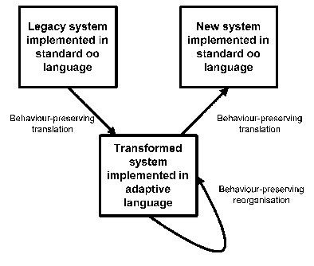

This paper describes a method for preserving behaviour during the reorganisation of object-oriented legacy systems written in standard object-oriented languages (e.g. C++, Smalltalk, Java, ADA). The method consists of three phases: In the first phase the legacy systems is transformed into an adaptive program. During the second phase the system is reorganised in a behaviour preserving way to fulfill new flexibility requirements. Finally the resulting adaptive program is retransformed to the original object-oriented language. The result of this process is a more flexible and adaptable system which is proven to be behaviourally equivalent to the source system.
Due to the hope to produce more quickly more flexible and adaptable systems, the object-oriented paradigm has been widely adopted in the industry several years ago. Today there are systems of millions of lines of code, which are nor flexible nor adaptable. Because it would be very expensive to redesign and reimplement these systems from the scratch, there is an increasing interest in re-engineering techniques.
The re-engineering process is a difficult task which can not be done without user-intervention. However some parts of the process are very error-prone when done manually: For example even minor changes like changing the name of a method can result in syntactic and semantic problems or a big portion of code has to be changed.
Tools to ease these reorganisation tasks must be proven to be behaviour-preserving, since otherwise they would not be used by any software-engineer. Reasonning about behaviour in C++ (the most widespread object-oriented language) or other object-oriented languages is a very hard problem, in the most cases it is even undecidable, if a change made to a piece of code preserves the systems behaviour (for an example consider pointer-arithmetic in C++).
To overcome these difficulties, the paradigm of adaptive programming was proposed. Systems implemented in an adaptive language are easier to change, because very often changes to the object-structure does not result in changes to the code. This makes it especially easy to prove the behavioural equivalence of the source system and the reorganised system.
While probably it will be easier to maintain adaptive programs, all over the world there are millions of lines of legacy code. A complete redesign and reimplementation of these systems from the scratch in an adatptive programming language would be too expensive (in terms of time and needed human resources). Therefore in this paper we propose the following approach: Source and destination language is the language of the source code of the system to reorganise. The steps of altering the system will be performed on the system translated into an adaptive language. Thus we combine the advantages of using a widespread object-oriented language and the use the adaptive paradigm, in which reorganisations can easily be proven to be behaviour preserving.
The paradigm of adaptive programming was proposed be Karl Lieberherr and his group [Lieb93a]. The main idea is the separation of method implementation from the object-structure. Consider the following example to get an impression of how adaptive programming works:
There are two classes named Table and Thing. A table can contain things. The code for a method of Table, which prints out all the contained things would contain an iteration over the set of things, calling the print-method on each item.
When you now feel, that you want to structure your things better, you need drawers. The redesign results in a new class Drawer, which contains things. A table now does not contain things directly but drawers with things. Of course you have to change the implementation now to capture these changes: The method print of Table will have to iterate over all drawers calling the print-method of each of them, which itself iterates over all contained things to finally print them using the print-method of Thing.
If you had been using and adaptive programming language, the code would have been identically for both structures. The implementation for the method print of Table could be the following:
OPERATION void print() FROM Table TO Thing { PREFIX Thing {print();} }
For more information on adaptive programming refer to [Lieb93a].
The following image depicts the proposed solution:
The most difficult task might be the transformation from the original source code to an adaptive program. This transformation must be proven to be behaviour-preserving. However we think that there are good chances to find the code responsible for the navigation through the object-structure: Every loop which accesses aggregated or associated objects in its body is a candidate for such a transformation.
Once the code is transformed into an adaptive program, changes to the structure can be made relatively easy: Since the implementation of the methods has seldom to be changed and since the behaviour of a systems is defined by its methods, the prove for the behaviouring property is simpler, that it would have been in standard object-oriented languages. Refer to [Huer95] to see, how this can be proven.
The last step should not be to complicated, either: Since the navigation-directive and the object-structure is given, it is relatively straight forward to get back to the original implementation language.
Because of the increasing amount of object-oriented software which is not flexible enough to be maintained and extended in a sensible way, these legacy systems need to be re-engineered into flexible frameworks. Due to the size of these systems (several millons of lines of code) it is hard to do this without tool-support. One important phase in the re-engineering life-cycle is the reorganisation-phase. In this phase the source-code modifications take place. Because a tool which is not proven to preserve behaviour during reorganisation would not been acceptable for software-engineers, it must be possible to prove this property. Proving behavioural invariance for standard object-oriented languages is undecidable. In this paper, we propose a solution of this problem using adaptive programming concepts and transformations between adaptive systems and the source systems.
[Lieb93a]: Karl J. Lieberherr and Cun Xiao, "Minimizing Dependency on Class Structures with Adaptive Programs", Object Technologies for Advanced Software, First JSSST International Symposium}, Lecture Notes in Computer Science volume 742, p. 424-441, Springer-Verlag, Nov 1993
[Huer95]: Walter L. Hürsch, "Maintaining consistency and behaviour of object-oriented systems during evolution", Thesis, College of Computer Science of Northeastern University, Aug 1995